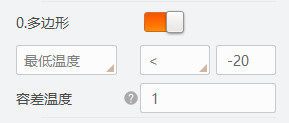

测温区域设置界面右侧还可进行测温参数设置、告警设置以及显示设置。
说明
完成相关设置后，点击右下角的确定设置生效并关闭界面，点击左下角的设置参数设置生效不关闭界面。
测温参数
测温参数部分可对伪彩模式、相机参数、全局测温以及专家测温进行设置。
- 伪彩模式
-
可选择相机的伪彩模式。
- 相机参数
-
对亮度、灰度系数、锐度、降噪等基础参数进行设置。
- 亮度
-
可调整预览图像的亮度。设置的值越大，图像越亮；设置的值越小，图像越暗。
- 灰度系数使能
-
可设置是否开启灰度系数功能，开启后可通过灰度系数进行设置。
- 灰度系数
-
可设置预览图像的灰度系数。设置的值越大，对比度越大；设置的值越小，对比度越小。
- 锐度使能
-
可设置是否开启锐度功能，开启后可通过锐度进行设置。
- 锐度
-
可设置预览图像边缘的锐利程度。
- 降噪使能
-
可设置是否开启降噪功能，开启后可提高图像的信噪比，进一步提高图像的成像质量。
- 全局测温
-
可设置测温区域的全局测温参数。
- 大气透过率
-
若红外相机的镜头前需增加锗玻璃，可通过该参数设置锗玻璃的透过率。
- 温度测量范围
-
根据实际需求选择温度测量范围，可选-20℃~150℃和0℃~550℃。
- 目标距离
-
可设置被测物体到设备的直线距离，单位为m。
- 全屏发射率
-
可设置被测物体的发射率，不同物体的发射率数值有所差别，具体请查看相应型号的红外测温相机用户手册。
- 专家测温
-
可对当前选中的测温区域进行专家测温参数设置。
- 测温区域专家模式
-
可设置是否开启专家测温模式，开启后需设置以下参数。
- 测温区域反射使能
-
当场景中存在高温物体，若被测物体的发射率较小，并且被测物体反射高温物体时，需开启测温区域反射率。
- 测温区域反射率
-
设置测温区域反射温度值，需与高温物体的温度值保持一致。
- 测温区域发射率
-
设置目标物体的发射率，单位为％，不同物体的发射率数值有所差别，具体请查看相应型号的红外测温相机用户手册。
- 测温区域目标距离
-
设置被测量物体到设备的直线距离，单位为m。
告警设置
可对绘制的测温区域设置相应的温度告警条件，分为区域内告警和区域间告警两种。
- 区域内告警
-
可对绘制的单个测温区域进行告警规则设置。
不同测温区域的告警条件设置方式不同，主要可分为以下两种。
- 点
-
开启点区域，如下图所示。
- 点的温度
-
设置告警温度条件和温度阈值。
若告警温度条件选择＞，设置的温度阈值为50℃，当绘制的点区域处的目标温度大于50℃时产生告警。
- 容差温度
-
设置点测温区域内告警的恢复阈值。
当设置容差温度为 5℃时，告警温度为 50℃，当点测温区域内的温度小于等于
45℃时，告警取消。
- 多边形、线或圆
-
开启多边形、线或圆区域。以多边形区域为例，如下图所示。

图 5 多边形区域告警条件
设置告警温度来源、温度条件和温度阈值。
若告警温度来源选择最低温度，告警温度条件选择＜，设置的温度阈值为-20℃，当绘制的多边形、线或圆区域处的目标温度小于-20℃时产生告警。
- 容差温度
-
设置测温区域内告警的恢复阈值。
- 区域间告警
-
可对绘制的两个测温区域之间的温度特征信息进行对比，共支持设置4个区域间告警规则。
开启需要设置的区域间告警规则。以规则0为例，如下图所示。
首先，在区域索引1中设置源测温区域，即被比较区域，在区域索引2中设置目标测温区域，即比较区域。
其次，设置告警温度来源、温度条件和温度阈值。
若告警温度来源选择最高温度，告警温度条件选择＞，设置的温度阈值为10°C，当源测温区域的最高温度比目标测温区域的最高温度大于10°C时，产生告警。
显示设置
可对基础显示和温度窗口等温度显示功能进行设置。
- 基础显示
-
可设置预览图像的测温条显示功能和图像叠加功能。
- 测温条
-
使能后，可在图像预览画面右侧显示测温温度条，如下图所示。
- 区域信息叠加
-
选择图像叠加方式，可选裸图、相机叠加和客户端叠加。
说明
如需显示测温条和测温区域温度信息，需先开启相机叠加功能。
- 温度窗口
-
温度窗口包含4个数值选项和1个曲线图选项，开启任一选项后，可显示在属性树的温度窗口栏处。
开启某一选项，下拉选择已绘制的测温区域和温度来源，如下图所示。
显示结果具体请见温度窗口章节。